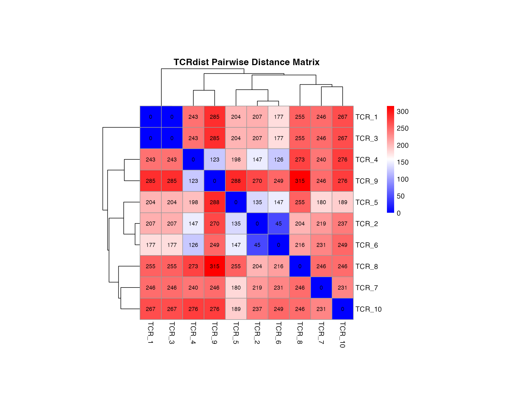
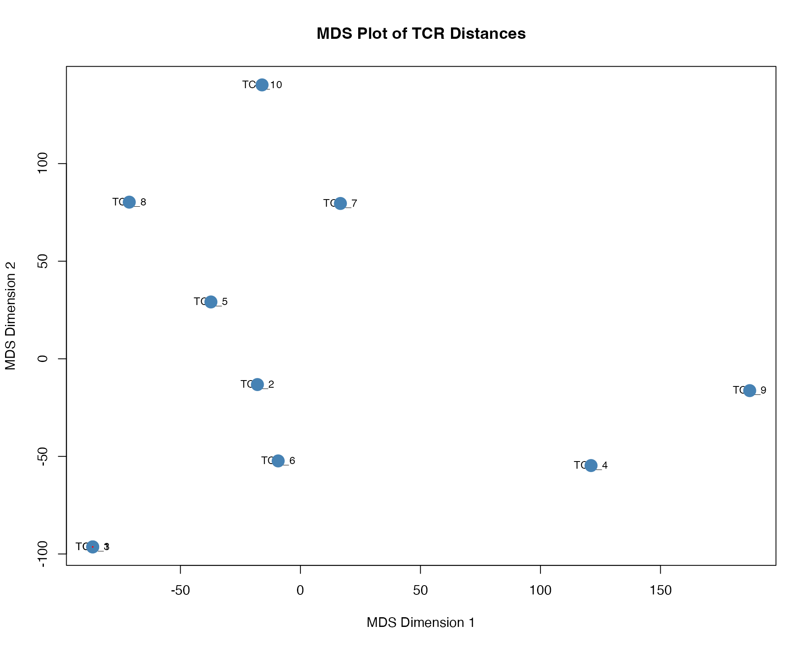
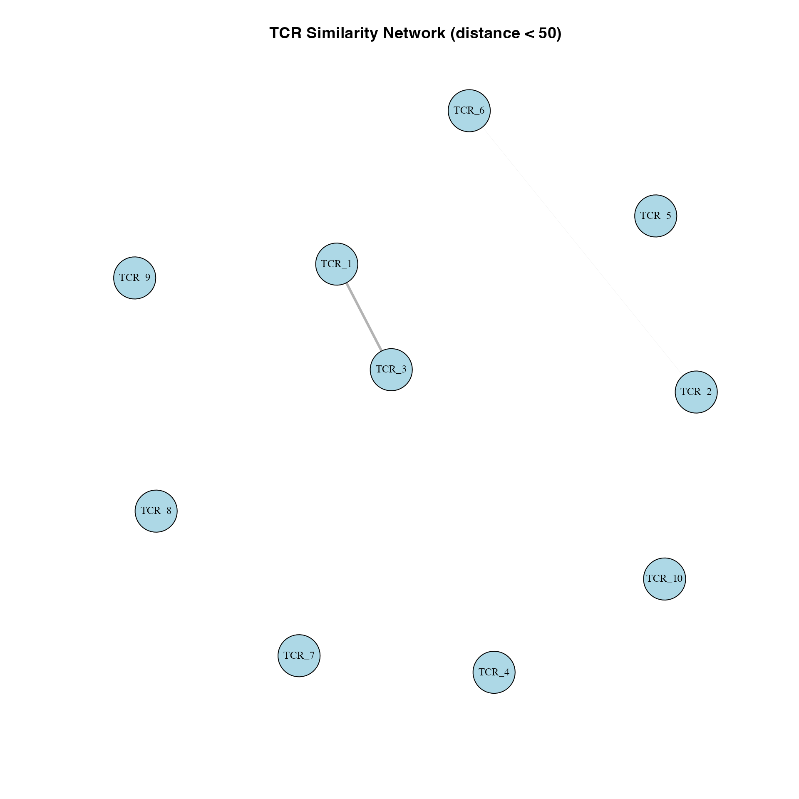
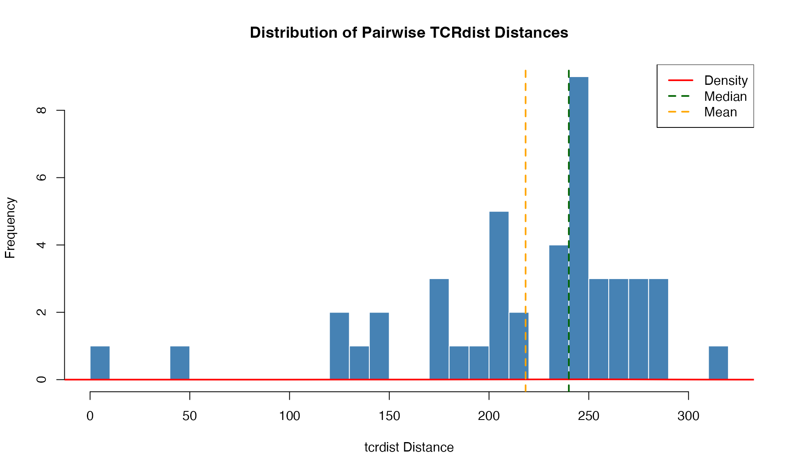
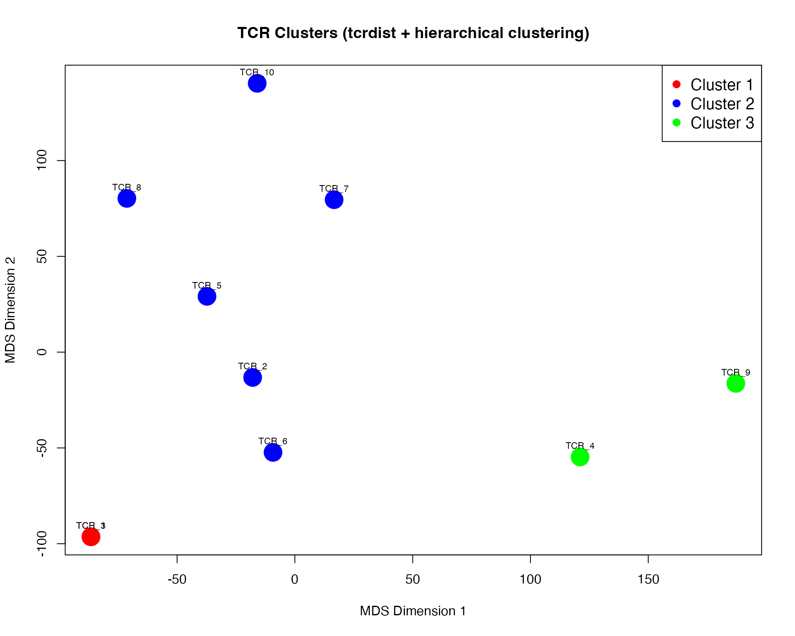

TCRdist: Sequence-Based Distance Calculation
Source:vignettes/tcrdist-analysis.Rmd
tcrdist-analysis.RmdIntroduction
The tcrdist algorithm calculates sequence-based distances between T-cell receptors (TCRs) using a combination of BLOSUM62 substitution matrices and Needleman-Wunsch alignment. This approach is inspired by the original tcrdist paper and provides a biologically meaningful measure of TCR similarity.
Quick Start
Load the package and create example TCR data:
library(vdjmatchR)
# Example TCR data with CDR3 sequences for alpha and beta chains
tcr_data <- data.frame(
id = paste0("TCR_", 1:10),
# Alpha chain CDR3
cdr3_a = c(
"CAASNRGSTLGRLYF",
"CAASIRSSYKLIF",
"CAASNRGSTLGRLYF", # duplicate
"CALSDPNQAGTALIF",
"CAASKQGAQKLVF",
"CAASNRDSSYKLIF", # similar to #2
"CALSERPGQNFVF",
"CAVNDYKLSF",
"CALSDPNQAGTALIF", # duplicate of #4
"CAVEDTGGFKTIF"
),
# Beta chain CDR3
cdr3_b = c(
"CASSLTGNTEAFF",
"CASSLGQGAYEQYF",
"CASSLTGNTEAFF", # duplicate
"CASSLGQGAYEQYF", # same as #2
"CASSVGQGGELFF",
"CASSLGQGAYEQYF", # same as #2
"CASSYRGQNTLYF",
"CASSLAGNQPQHF",
"CASSFPWDRVDTQYF",
"CASSQDRTGELF"
),
stringsAsFactors = FALSE
)
# For this example, we'll use empty strings for CDR1/2 (not available in our data)
# In practice, you would provide actual CDR1/2 sequences if available
tcr_data$cdr1_a <- ""
tcr_data$cdr2_a <- ""
tcr_data$cdr1_b <- ""
tcr_data$cdr2_b <- ""
head(tcr_data)
#> id cdr3_a cdr3_b cdr1_a cdr2_a cdr1_b cdr2_b
#> 1 TCR_1 CAASNRGSTLGRLYF CASSLTGNTEAFF
#> 2 TCR_2 CAASIRSSYKLIF CASSLGQGAYEQYF
#> 3 TCR_3 CAASNRGSTLGRLYF CASSLTGNTEAFF
#> 4 TCR_4 CALSDPNQAGTALIF CASSLGQGAYEQYF
#> 5 TCR_5 CAASKQGAQKLVF CASSVGQGGELFF
#> 6 TCR_6 CAASNRDSSYKLIF CASSLGQGAYEQYFCalculating TCRdist
Calculate pairwise distances between all TCRs:
# Calculate pairwise tcrdist
result <- calculate_tcrdist(
cdr1_a = tcr_data$cdr1_a,
cdr2_a = tcr_data$cdr2_a,
cdr3_a = tcr_data$cdr3_a,
cdr1_b = tcr_data$cdr1_b,
cdr2_b = tcr_data$cdr2_b,
cdr3_b = tcr_data$cdr3_b
)
# Convert to distance matrix
n <- result$n
dist_matrix <- matrix(result$distance, nrow = n, ncol = n)
rownames(dist_matrix) <- tcr_data$id
colnames(dist_matrix) <- tcr_data$id
# Show distance matrix
print(round(dist_matrix, 1))
#> TCR_1 TCR_2 TCR_3 TCR_4 TCR_5 TCR_6 TCR_7 TCR_8 TCR_9 TCR_10
#> TCR_1 0 207 0 243 204 177 246 255 285 267
#> TCR_2 207 0 207 147 135 45 219 204 270 237
#> TCR_3 0 207 0 243 204 177 246 255 285 267
#> TCR_4 243 147 243 0 198 126 240 273 123 276
#> TCR_5 204 135 204 198 0 147 180 255 288 189
#> TCR_6 177 45 177 126 147 0 231 216 249 249
#> TCR_7 246 219 246 240 180 231 0 246 246 231
#> TCR_8 255 204 255 273 255 216 246 0 315 246
#> TCR_9 285 270 285 123 288 249 246 315 0 276
#> TCR_10 267 237 267 276 189 249 231 246 276 0Visualizations
1. Distance Heatmap
Visualize the pairwise distance matrix as a heatmap:
library(pheatmap)
# Create heatmap with hierarchical clustering
pheatmap(
dist_matrix,
main = "TCRdist Pairwise Distance Matrix",
color = colorRampPalette(c("blue", "white", "red"))(100),
clustering_distance_rows = "euclidean",
clustering_distance_cols = "euclidean",
clustering_method = "ward.D2",
fontsize = 10,
cellwidth = 30,
cellheight = 30,
display_numbers = round(dist_matrix, 0),
number_color = "black",
fontsize_number = 8
)
2. Hierarchical Clustering Dendrogram
Use tcrdist as a distance metric for clustering:
# Convert to dist object
dist_obj <- as.dist(dist_matrix)
# Perform hierarchical clustering
hc <- hclust(dist_obj, method = "ward.D2")
# Plot dendrogram
plot(hc,
main = "Hierarchical Clustering of TCRs (tcrdist)",
xlab = "TCR ID",
ylab = "tcrdist Distance",
cex = 0.8)
# Add rectangles around clusters
rect.hclust(hc, k = 3, border = 2:4)
3. Multidimensional Scaling (MDS)
Project high-dimensional TCR distances into 2D space:
# Perform classical MDS
mds <- cmdscale(dist_obj, k = 2)
colnames(mds) <- c("MDS1", "MDS2")
# Plot
plot(mds,
type = "n",
main = "MDS Plot of TCR Distances",
xlab = "MDS Dimension 1",
ylab = "MDS Dimension 2")
text(mds[,1], mds[,2],
labels = tcr_data$id,
cex = 0.8)
# Add points
points(mds, pch = 19, col = "steelblue", cex = 2)
# Connect duplicates/similar sequences
# TCR_1 and TCR_3 are identical
segments(mds[1,1], mds[1,2], mds[3,1], mds[3,2], col = "red", lwd = 2)
4. Network Graph
Visualize TCR similarity as a network (edges = distance < threshold):
library(igraph)
# Create similarity network (connect if distance < threshold)
threshold <- 50
adj_matrix <- dist_matrix < threshold
diag(adj_matrix) <- FALSE # Remove self-loops
# Create graph
g <- graph_from_adjacency_matrix(adj_matrix, mode = "undirected")
# Set vertex attributes
V(g)$label <- tcr_data$id
V(g)$size <- 15
# Set edge weights based on distances
# Get edge list to properly assign weights
edges <- as_edgelist(g, names = FALSE)
edge_weights <- sapply(1:nrow(edges), function(i) {
1 / (dist_matrix[edges[i,1], edges[i,2]] + 1)
})
E(g)$weight <- edge_weights
E(g)$width <- E(g)$weight * 3
# Layout
layout <- layout_with_fr(g)
# Plot
plot(g,
layout = layout,
vertex.color = "lightblue",
vertex.label.cex = 0.8,
vertex.label.color = "black",
edge.color = "gray70",
main = "TCR Similarity Network (distance < 50)")
5. Distance Distribution
Examine the distribution of pairwise distances:
# Extract upper triangle (avoid duplicates and diagonal)
distances <- dist_matrix[upper.tri(dist_matrix)]
# Create histogram
hist(distances,
breaks = 30,
col = "steelblue",
border = "white",
main = "Distribution of Pairwise TCRdist Distances",
xlab = "tcrdist Distance",
ylab = "Frequency")
# Add density curve
lines(density(distances), col = "red", lwd = 2)
# Add summary statistics
abline(v = median(distances), col = "darkgreen", lwd = 2, lty = 2)
abline(v = mean(distances), col = "orange", lwd = 2, lty = 2)
legend("topright",
legend = c("Density", "Median", "Mean"),
col = c("red", "darkgreen", "orange"),
lty = c(1, 2, 2),
lwd = 2)
Advanced Example: Identifying TCR Clusters
Use tcrdist to identify groups of similar TCRs:
# Cut dendrogram to get clusters
clusters <- cutree(hc, k = 3)
# Add cluster assignments to data
tcr_data$cluster <- clusters
# Show cluster membership
print(tcr_data[, c("id", "cdr3_a", "cdr3_b", "cluster")])
#> id cdr3_a cdr3_b cluster
#> 1 TCR_1 CAASNRGSTLGRLYF CASSLTGNTEAFF 1
#> 2 TCR_2 CAASIRSSYKLIF CASSLGQGAYEQYF 2
#> 3 TCR_3 CAASNRGSTLGRLYF CASSLTGNTEAFF 1
#> 4 TCR_4 CALSDPNQAGTALIF CASSLGQGAYEQYF 3
#> 5 TCR_5 CAASKQGAQKLVF CASSVGQGGELFF 2
#> 6 TCR_6 CAASNRDSSYKLIF CASSLGQGAYEQYF 2
#> 7 TCR_7 CALSERPGQNFVF CASSYRGQNTLYF 2
#> 8 TCR_8 CAVNDYKLSF CASSLAGNQPQHF 2
#> 9 TCR_9 CALSDPNQAGTALIF CASSFPWDRVDTQYF 3
#> 10 TCR_10 CAVEDTGGFKTIF CASSQDRTGELF 2
# Calculate within-cluster vs between-cluster distances
within_cluster <- sapply(unique(clusters), function(k) {
idx <- which(clusters == k)
if (length(idx) > 1) {
mean(dist_matrix[idx, idx][upper.tri(dist_matrix[idx, idx])])
} else {
NA
}
})
between_cluster <- mean(dist_matrix[outer(clusters, clusters, "!=")])
cat("\nAverage within-cluster distance:", mean(within_cluster, na.rm = TRUE), "\n")
#>
#> Average within-cluster distance: 108.3333
cat("Average between-cluster distance:", between_cluster, "\n")
#> Average between-cluster distance: 238.2857Colored Cluster Visualization
# Color by cluster
cluster_colors <- c("red", "blue", "green")[clusters]
# MDS with cluster colors
plot(mds,
type = "n",
main = "TCR Clusters (tcrdist + hierarchical clustering)",
xlab = "MDS Dimension 1",
ylab = "MDS Dimension 2")
points(mds, pch = 19, col = cluster_colors, cex = 3)
text(mds[,1], mds[,2],
labels = tcr_data$id,
cex = 0.7,
pos = 3)
legend("topright",
legend = paste("Cluster", 1:3),
col = c("red", "blue", "green"),
pch = 19,
cex = 1.2)
Single Pair Distance Calculation
For comparing just two TCRs:
# Compare two specific TCRs
dist_single <- tcrdist_single(
cdr1_a_1 = "", cdr2_a_1 = "", cdr3_a_1 = "CAASNRGSTLGRLYF",
cdr1_b_1 = "", cdr2_b_1 = "", cdr3_b_1 = "CASSLTGNTEAFF",
cdr1_a_2 = "", cdr2_a_2 = "", cdr3_a_2 = "CAASIRSSYKLIF",
cdr1_b_2 = "", cdr2_b_2 = "", cdr3_b_2 = "CASSLGQGAYEQYF"
)
cat("Distance between TCR_1 and TCR_2:", dist_single, "\n")
#> Distance between TCR_1 and TCR_2: 207Interpretation Guide
Distance Values
- 0: Identical TCRs
- < 50: Very similar TCRs (likely recognize same epitope)
- 50-100: Moderate similarity
- > 100: Dissimilar TCRs
Use Cases
- TCR clustering: Group similar TCRs that may recognize the same antigen
- Repertoire comparison: Compare TCR repertoires between samples
- Clonotype matching: Find similar clonotypes across datasets
- Epitope specificity: Identify TCRs with shared specificity patterns
- Quality control: Detect duplicate or highly similar sequences
Performance Notes
- Written in Rust for high performance
- Handles large datasets efficiently
- Pairwise distance calculation is O(n²)
- For n=1000 TCRs: ~500,000 pairwise comparisons
References
- Dash et al. (2017) “Quantifiable predictive features define epitope-specific T cell receptor repertoires” Nature
- Original tcrdist implementation: https://github.com/phbradley/tcr-dist
Session Info
sessionInfo()
#> R version 4.4.3 (2025-02-28)
#> Platform: aarch64-apple-darwin20
#> Running under: macOS Sequoia 15.4.1
#>
#> Matrix products: default
#> BLAS: /Library/Frameworks/R.framework/Versions/4.4-arm64/Resources/lib/libRblas.0.dylib
#> LAPACK: /Library/Frameworks/R.framework/Versions/4.4-arm64/Resources/lib/libRlapack.dylib; LAPACK version 3.12.0
#>
#> locale:
#> [1] en_US.UTF-8/en_US.UTF-8/en_US.UTF-8/C/en_US.UTF-8/en_US.UTF-8
#>
#> time zone: America/Los_Angeles
#> tzcode source: internal
#>
#> attached base packages:
#> [1] stats graphics grDevices utils datasets methods base
#>
#> other attached packages:
#> [1] igraph_2.1.4 pheatmap_1.0.12 vdjmatchR_0.0.0.9000
#>
#> loaded via a namespace (and not attached):
#> [1] cli_3.6.5 knitr_1.50 rlang_1.1.6 xfun_0.52
#> [5] textshaping_1.0.0 jsonlite_2.0.0 glue_1.8.0 htmltools_0.5.8.1
#> [9] ragg_1.4.0 sass_0.4.10 scales_1.4.0 rmarkdown_2.29
#> [13] grid_4.4.3 evaluate_1.0.4 jquerylib_0.1.4 fastmap_1.2.0
#> [17] yaml_2.3.10 lifecycle_1.0.4 compiler_4.4.3 fs_1.6.6
#> [21] RColorBrewer_1.1-3 pkgconfig_2.0.3 htmlwidgets_1.6.4 farver_2.1.2
#> [25] systemfonts_1.2.2 digest_0.6.37 R6_2.6.1 dichromat_2.0-0.1
#> [29] magrittr_2.0.3 bslib_0.9.0 tools_4.4.3 gtable_0.3.6
#> [33] pkgdown_2.1.1 cachem_1.1.0 desc_1.4.3